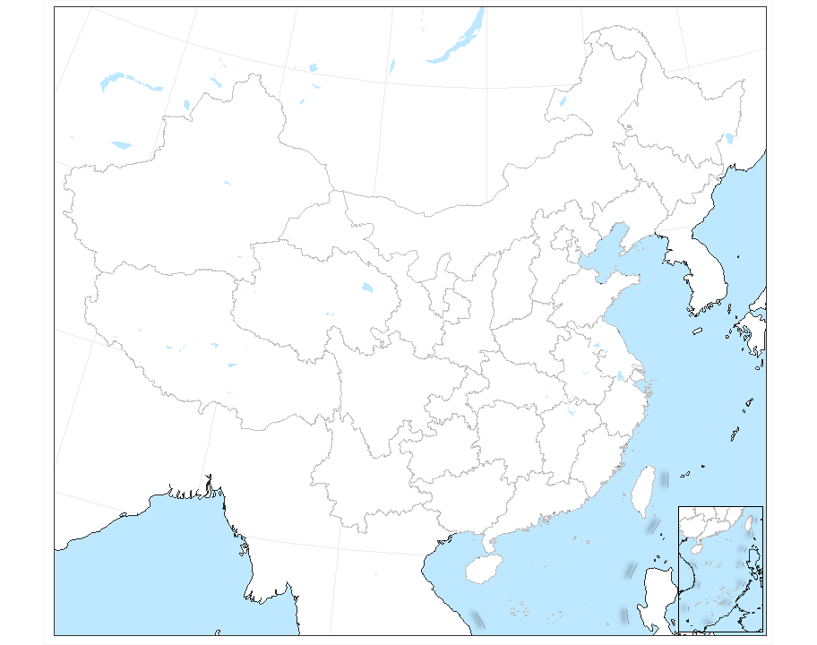

The goal of geocn is to provide various commonly used spatial data related to Chinese regions in the R programming environment.
Installation
- Install development binary version from r-universe with:
install.packages("geocn",
repos = c("https://spatlyu.r-universe.dev",
"https://cran.rstudio.com/"),
dep = TRUE)- Install development source version from GitHub with:
# install.packages("devtools")
devtools::install_github("SpatLyu/geocn",
build_vignettes = T,
dep = T)Example
Drawing a Map of China Using ggplot2
library(sf)
library(ggplot2)
library(cowplot)
library(geocn)
albers = load_cn_alberproj()
province = load_cn_province()
tenline = load_cn_tenline()
ocean = load_world_ocean()
lakes = load_world_lake()
coastline = load_world_coastline()
ggplot() +
geom_sf(data = ocean,fill="#BEE8FF",color="white",size=.1) +
geom_sf(data = coastline,color="#252525",size=.5) +
geom_sf(data = province,fill="white",size=.1,color="grey") +
geom_sf(data = lakes,fill="#BEE8FF",color="white",size=.1) +
geom_sf(data = tenline,size=.2,color="#9d98b7") +
ggfx::with_shadow(geom_sf(data = tenline,size=.2,color="#9d98b7") ,
sigma = 3,x_offset = -5,y_offset = -2) -> fig1
fig1 +
coord_sf(crs = albers,
ylim = c(1500000,6000000),
xlim = c(-3100000,2000000),
expand = FALSE) +
theme_bw() +
theme(plot.background = element_rect("grey97", fill = NA),
axis.text = element_blank(),
axis.ticks = element_blank(),
axis.title = element_blank()) -> china.main
fig1 +
coord_sf(crs = albers,
ylim = c(273000,2800000),
xlim = c(-350000,1350000)) +
theme_minimal() +
theme(
axis.text = element_blank(),
axis.ticks = element_blank(),
axis.title = element_blank(),
panel.grid = element_blank(),
panel.background = element_rect("#BEE8FF", color = NA),
panel.border = element_rect(fill=NA,
linetype = 1,
linewidth = 0.5),
plot.margin=unit(c(0,0,0,0),"cm")) -> china.ocean
ggdraw() +
draw_plot(china.main) +
draw_plot(china.ocean,x = .815, y = .015,
width = .13, height = .20) -> cnmap1
cnmap1
Drawing a Map of China Using tmap
library(sf)
library(tmap)
library(cowplot)
library(geocn)
albers = load_cn_alberproj()
cn_border = load_cn_border()
main_border = load_cn_landcoast()
tenline = load_cn_tenline()
province = load_cn_province()
tm_shape(main_border,
projection = albers) +
tm_lines(col = NA,lwd = 0.01) +
tm_shape(province) +
tm_fill(col = 'white',alpha = .5) +
tm_borders(col = 'grey40', lwd = 1.25) +
tm_shape(cn_border) +
tm_lines(col='#9d98b7',lwd = 2.5) +
tm_scale_bar(position = c(0.05,0.01),
width = 0.15,text.size = 1.05,
lwd = 2) +
tm_compass(position = c(0.05,0.9),
just = 'center',size = 1.5,
text.size = .65,show.labels = 1) +
tm_layout(legend.width = 0.75,
legend.text.size = 1,
legend.height = 1.75,
legend.position = c(0.045,0.075),
compass.type = "arrow",
fontfamily = "serif") -> cn_mainplot
tm_shape(tenline,
projection = albers) +
tm_lines(col=NA,lwd=0.01) +
tm_shape(province) +
tm_fill(col = 'white',alpha = .5) +
tm_borders(col = 'grey40', lwd = 1.25) +
tm_shape(cn_border) +
tm_lines(col='#9d98b7',lwd = 2.5) -> cn_miniplot
ggdraw() +
draw_plot(tmap_grob(cn_mainplot)) +
draw_plot(tmap_grob(cn_miniplot),
halign = 0.5,valign = 0.5,
height = 0.2,
x = 0.427,
y = 0.019) -> cnmap2
cnmap2